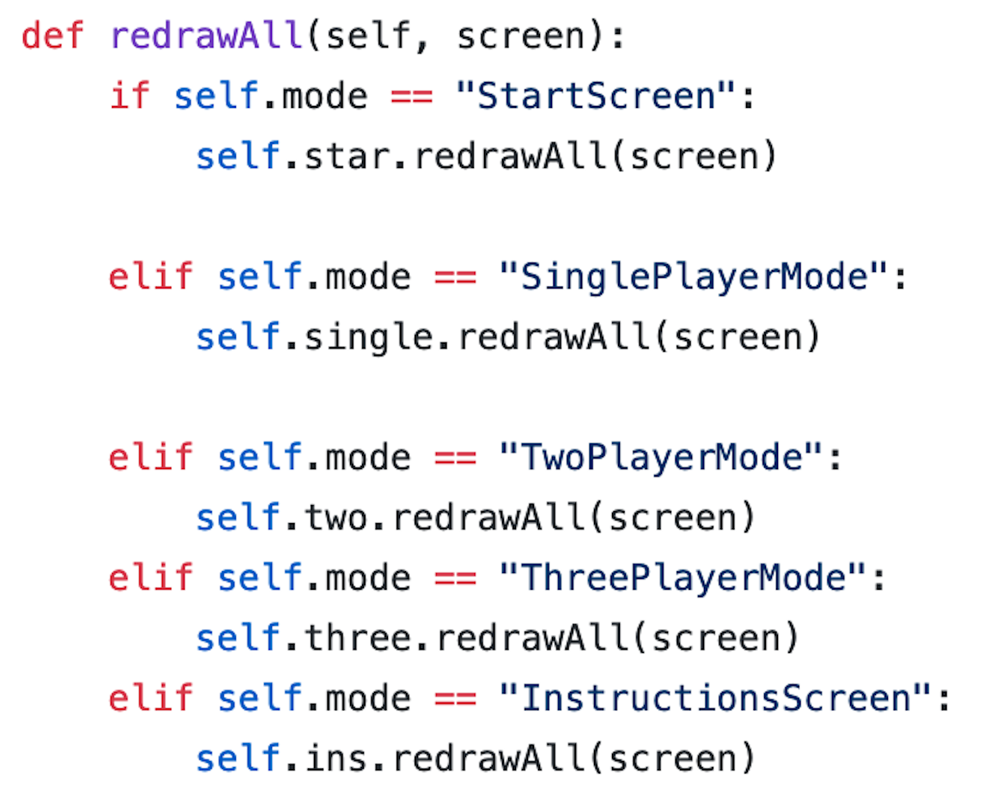
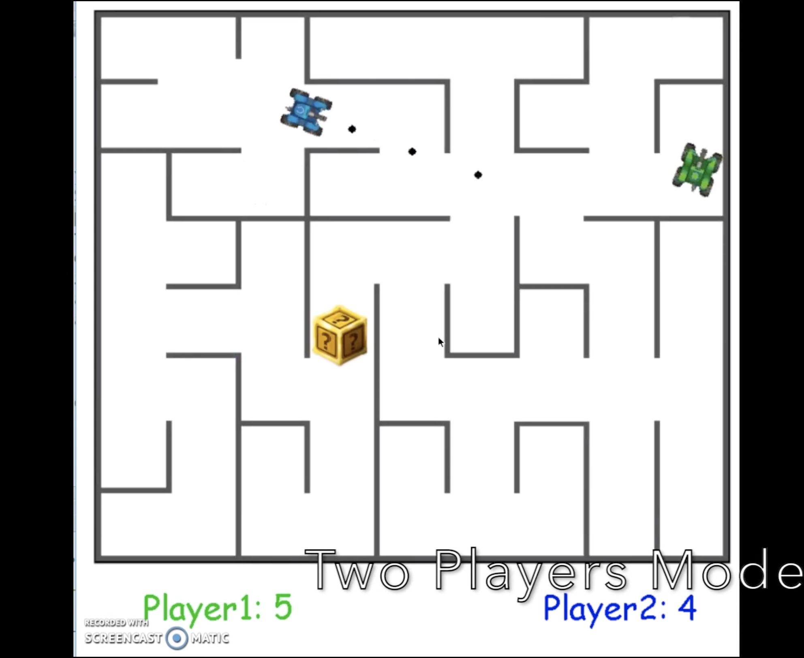
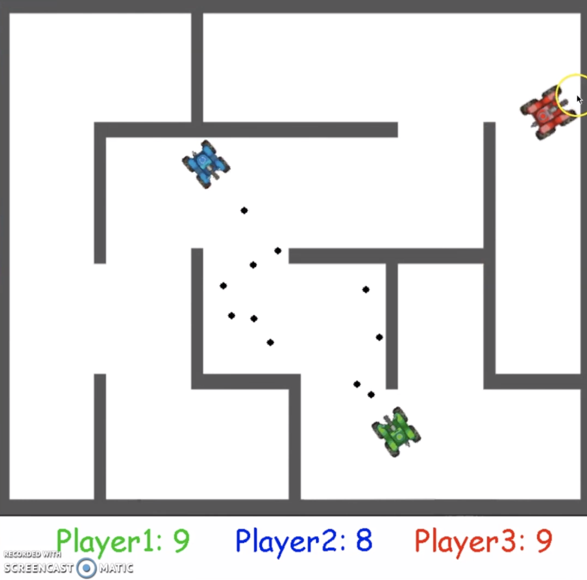
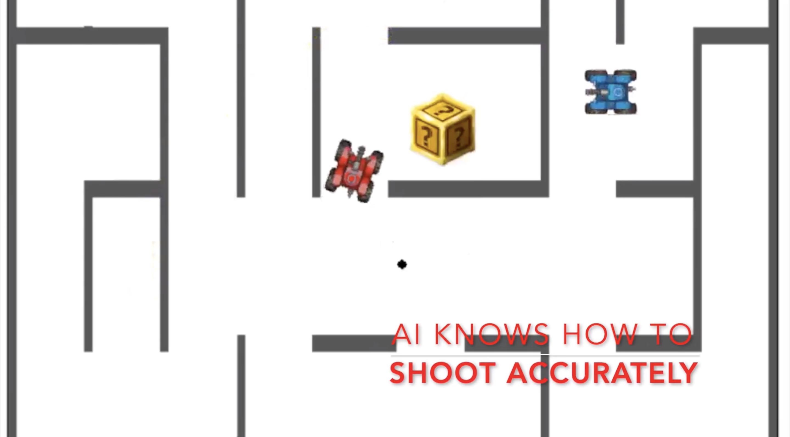
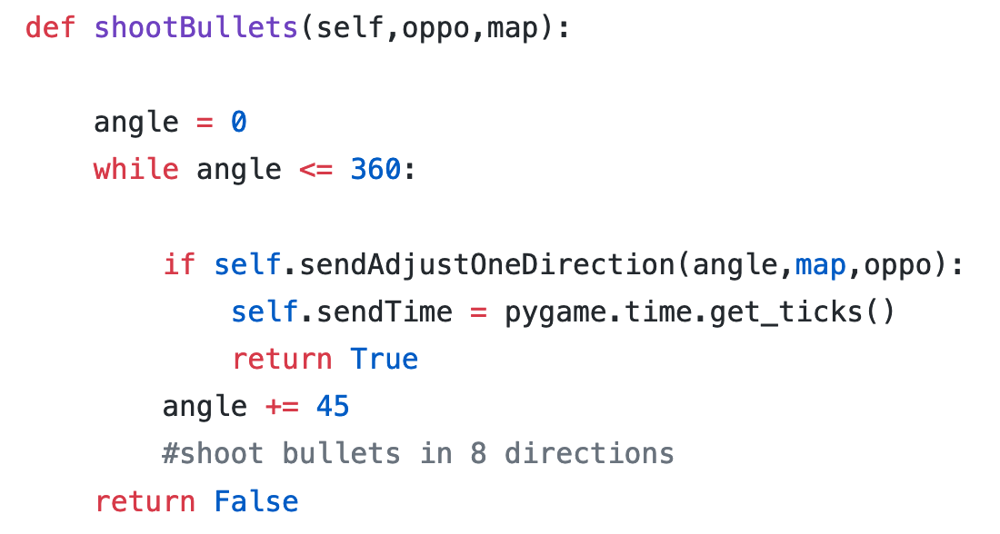

15112 Crazy Tanks
Overview
Fall 2018
这个项目献给 斯科特·陈
感谢你在高中作为我的 sametable
这是 CMU 15-112计算机基础和编程的学期项目 这是我开发的第一款电子游戏。它是在python中编程的，并且使用了pygame包。这是对flash游戏坦克大战的再现。我选择重现坦克大战是因为我以前经常和我高中的朋友玩这个游戏。
这一页是游戏的一个细目，所以未来的15112名学生可以参考，而不必通读我写的无聊代码。
你可以在这里看到一个3分钟的游戏预告片
总体架构：
这个游戏有7个不同的场景: StartScreen, SinglePlayerMode, TwoPlayerMode, ThreePlayerMode, InstructionsScreen, RankScreen, and EasterMode.
因为PyGame不支持如Unity中的场景切换，所以我编写了一些场景切换代码。核心思想是在不同模式下调用不同的redrawall或timerfired。这个方法在15112课上有所提及，所以我不会在这里进一步阐述。您可以在这里了解更多信息：http://www.krivers.net/15112-s18/notes/notes-animations-demos.html (Mode Demo)
|  |
| Mode Demo |
{kind=link}
多人模式：
本地双玩家多人模式是本游戏的MVP。棘手的部分是如何检查坦克和地图以及子弹和地图之间的碰撞。地图生成为PNG图像，墙为黑色像素，通道为透明背景（零α通道）。而坦克只是一个卡通坦克的图片。
我的许多在2019年春季的112节课上的朋友，试图在游戏中使用pygame.sprite.collide（self，map）。这不能起作用，因为sprite.collide将地图视为sprite，也就是一个整体图像。因为地图在你的游戏对象下面（在我的例子中游戏对象是坦克），你的游戏对象总是会与地图发生碰撞。
然而，有一个称为pygame.sprite.collide_mask（self，map）的方法。这可以让游戏正常工作，因为此函数为地图创建一个“mask”。也就是说，它创建了一个新的“图像”，其像素仅为非零阿尔法通道。因此，在我的例子中，碰撞只考虑黑墙，而透明的通道不会被考虑。
在MVP中，您可能需要注意的另一件事是帧速率。在我的第一个原型中，每秒的子弹速度比每秒的帧速率快。由于速度快，它可以在下次碰撞检查之前移动以通过墙的宽度。因此，我想要的弹性墙效果无法实现。起初，我认为这是一个编程问题，所以我一直在尝试调整碰撞方法。所以请注意，帧速率可能会影响碰撞测试。
我在第一次迭代中完成了一个没有人工智能的坦克。在第二次迭代中完成两人模式后，我在第三次迭代中添加了三人模式。第三个玩家将使用鼠标导航并右击射击子弹。一旦你准备好了所有的基本代码，这就不难实现了
单人模式（游戏AI）:
哦，男孩，这是比赛中最难的部分。我需要设计一个能导航、射击和躲避子弹的人工智能坦克。理论上，如果我将地图存储在一个二维列表中，我就可以使用回溯函数并定期更新人工智能的路径。算法不会很难编写。但问题是，我没有将地图存储在二维列表中。
为了简化我的MVP，我最初使用了地图的一个PS的图像。在我的第二次迭代中，我想不出一种使用回溯生成地图的有效方法。这是因为我需要避免封闭任何尺寸的容器，这样坦克就不会被困在一个区域。
为了保持项目的运行，我选择了避免这个问题，所以没有用自动生成的地图。在我的第二次迭代中，我只是让人工智能坦克在每次撞到墙上时都简单地右转。这将使人工智能坦克似乎在四处移动。你可能已经猜到了，缺点是有时坦克会被困在范围里绕圈。
在第三次迭代中，我编写了一个“光线投射”函数。基本上，我会定期向8个方向发射8颗不同的子弹。这些子弹不会被画出来。通过计算时间，这种光线投射可以让坦克知道哪个方向有更多的空间，哪个方向是死胡同。然后坦克可以根据这些信息做出转弯的决定。
经过长时间的微调，人工智能的游戏运行得很好。我觉得你总是可以尝试想出创造性的方法来实现游戏人工智能。
彩蛋：
在第四次迭代中，我添加了一些改变坦克大小和速度的powerup、一个在本地存储过去分数的排名界面，以及一个彩蛋模式。你可以通过在启动屏幕上乱转来触发复活节模式。随意玩玩，尝试打破游戏：）